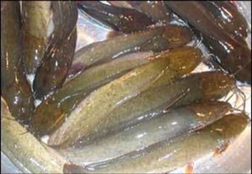
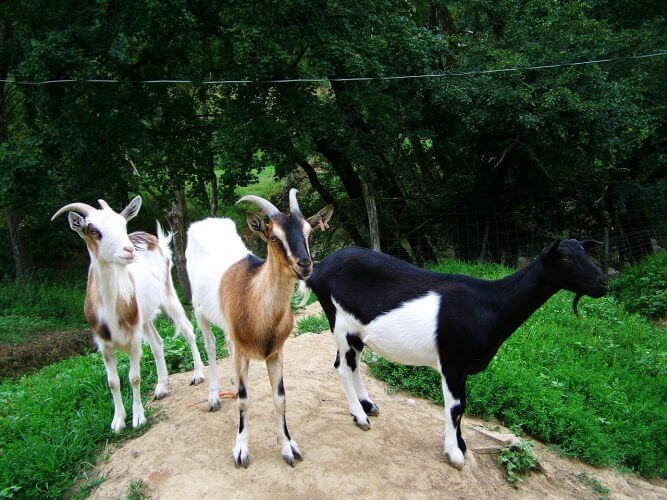
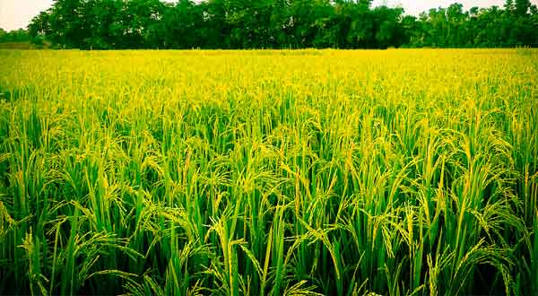

Welcome to AgriDoc
AgriDoc is here to provide you a complete agricultural solution. Our aim is to give you a proper guideline for the cultivation of different crops, fishes and cattle as well as to give proper solutions for different agricultural problems via experts. We have provided the general scientific guidelines for cultivation of different crops, fishes, and cattle in the Info section. For different agricultural problems you need to take a picture and upload it with appropriate location and category in the Solution section. A related district officer will review that problem and give a solution via text message. If the problem or the picture is not clear to that district officer then he/she will refer you an upazila officer so that you can get a proper solution.
Featured Guidelines
কবুতর পালন

কবুতরের প্রজনন, ডিম উৎপাদন ও ডিম ফুটানো:
হাঁস-মুরগির মতো যে কোনো মর্দা কবুতর মাদী কবুতরের সাথে সহজে জোড়া বাঁধে না। এদেরকে এক সাথে এক সপ্তাহ রাখলে জোড়া বাঁধে। মুরগীর ন্যায় কবুতরের জননতন্ত্রে ডিম উৎপন্ন হয়। তবে ডিম্বাশয়ে একসাথে সাধারণত মাত্র দু’টি ফলিকুল তৈরি হয়।
Read More »
দেশী মাগুরের চাষ
মাগুর বাংলাদেশের সম্ভাবনাময় মাছের মধ্যে অন্যতম। সুস্বাদু ও উপাদেয় এ মাছ দেশের সব শ্রেণীর মানুষের কাছে অত্যন্ত লোভনীয়। দেশী মাগুরের বৈশিষ্ট্য অতিরিক্ত শ্বাসনালী থাকায় পানি ছাড়াও বাতাস থেকে সরাসরি অক্সিজেন গ্রহণ করতে পারে। তাই মজা ও পচাপুকুর, ছোট ছোট ডোবা ইত্যাদি জলাশয়ের দূষিত পানিতেও
Read More »
ছাগল পালন
ছাগল লালন-পালন ও বাসস্থানঃ লালন-পালন বা বাসস্থানের জন্য সাধারন ব্যবস্থাই যথেষ্ট। -ছাগল শুষ্ক আবহাওয়া পছন্দ করে। -যথেষ্ট আলোবাতাস আছে এবং ভেজা স্যাঁতস্যেঁতে নয় এমন ঘর হলেই চলবে। -খামারে আবদ্ধ ঘরে ছাগল পালন করতে হলে পূর্ণ বয়স্ক ছাগলের জন্য প্রায় ১ বর্গ মিটার স্থান প্রয়োজন।
খাদ্য:
Read More »
ধানের চাষ
জমি তৈরি : ধানের চারা রোপণের জন্য জমি কাদাময় করে উত্তমরূপে তৈরি করতে হবে। এ জন্য জমিতে প্রয়োজনমতো পানি দিয়ে মাটি একটু নরম হলে ১০-১৫ সেন্টিমিটার গভীর করে সোজাসুজি ও আড়াআড়িভাবে চার-পাঁচটি চাষ ও মই দিতে হবে যেন মাটি থকথকে কাদাময় হয়।
চারা রোপণ : বীজতলা থেকে ৩০-৩৫ দিন বয়সের চারা সাবধানে তুলে
Read More »